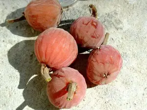

ⲗⲱⲱⲥ S nn m, fruit of sycamore-fig: Aeg 261 among fruits not to be blessed ⲡⲗ. جميز (PO 8 612 = HSt 104, Lat Hauler 115 om), Cf ⲉⲗⲕⲱ, ⲛⲟⲩϩⲉ.
(noun masculine)
species
fruit of sycamore-fig
Crum: 145a

complete
145a
See also:
| view | ⲛⲟⲩϩⲉ S ⲛⲟⲩϩⲓ BF | (noun feminine) sycamore (ficus sycomorus), fig-mulberry [συκαμινος]1222 |
| view | ⲉⲗⲕⲱ, ⲉⲗⲕⲟ S ⲗⲕⲟⲩ A ⲉⲗⲕⲟ, ⲉⲗⲕⲟⲩ, ⲁⲗⲕⲟⲩ B | (noun masculine) fruit of sycamore [συκαμινον]643 |
| view | ⲛⲟⲩⲕⲉⲣ B | (verb) tr: prick, incise, of unripe sycamore-figs [κνιζειν]
as noun, incision of this fruit1181 |